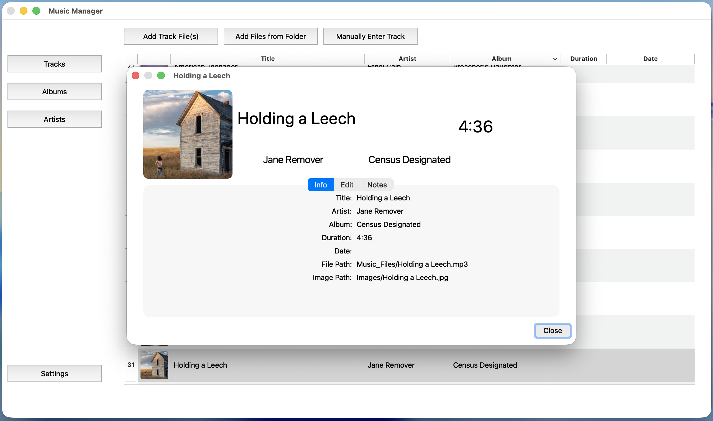
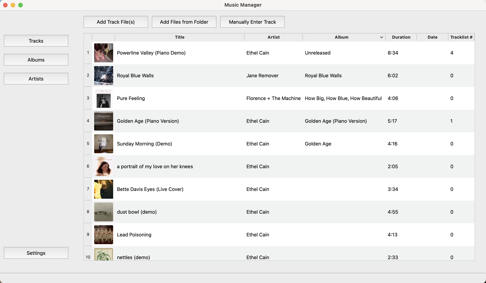
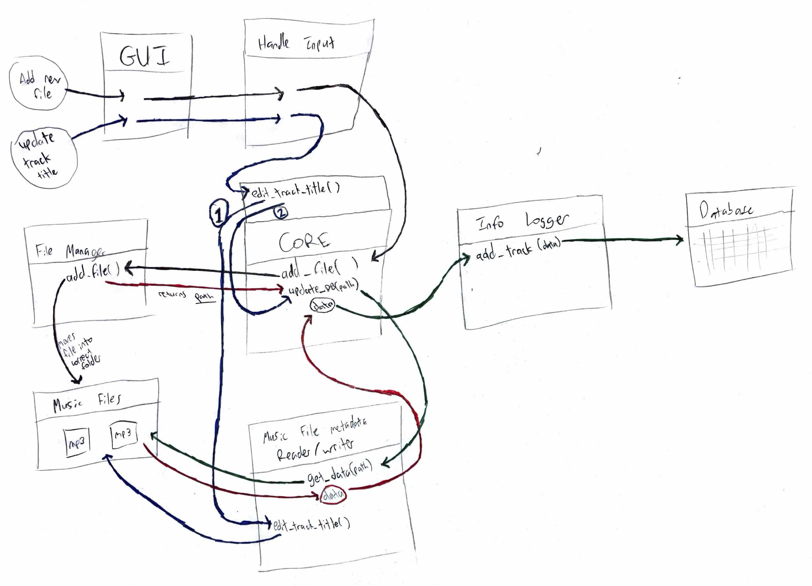

Music Manager
- GitHub repository
- Language(s): C++
- Libraries: Qt, TagLib
- Database: SQLite
Features
- Supports MP3, AAC, WAV, AIFF, FLAC, and ALAC files
- Add & delete music files
- Edit tracks & metadata
- Displays all tracks, albums, & artists
- SQLite database
- Qt GUI


- Designed and built a C++/Qt desktop music management application for cataloging both physical audio files and tracks without associated files, representing lost or unreleased media that conventional music managers cannot log
- Architected a 3-layer application with a centralized core interface, decoupling the Qt GUI from the backend and enabling the GUI to be replaced without modifying backend logic
- Developed file and metadata management supporting 6 file types, including metadata read/write operations, automatic cover art extraction, Unicode filename sanitization, and file system/database synchronization
- Designed a relational SQLite database for tracks, artists, and albums, implementing logic to automatically create, associate, and remove related records as library contents change
- Planned a 3-phase roadmap with architecture diagrams, database schema, and UI mockups to establish system architecture and project scope before implementation
